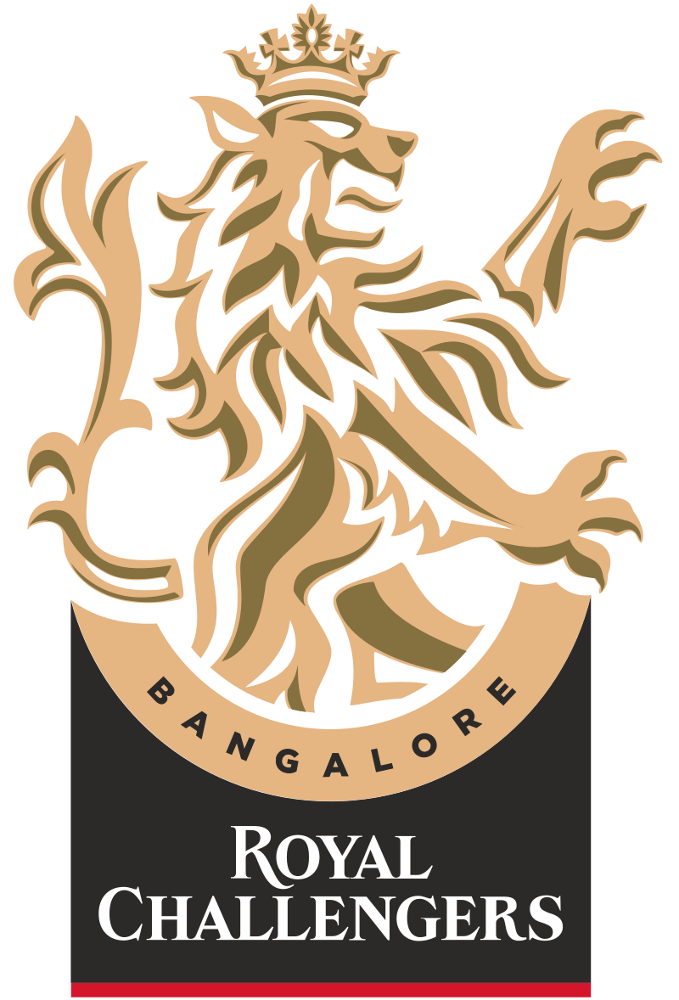

|  | |
| Captain | Virat Kohli |
|---|---|
| Coach | Mike Hesson |
| Ground | M.Chinnaswamy Stadium |
The Royal Challengers Bangalore (often abbreviated as RCB) are a franchise cricket team based in Bangalore, Karnataka, that plays in the Indian Premier League (IPL). It was founded in 2008 by United Spirits and named after the company's liquor brand Royal Challenge. Since its inception, the team has played its home matches at the M. Chinnaswamy Stadium.[2] The Royal Challengers have never won the IPL but finished runners-up on three occasions between 2009 and 2016. Their lack of success over the years despite the presence of various notable players has earned them the tag of "underachievers".[3][4] The team holds the records of both the highest and the lowest totals in the IPL – 263/5 and 49 respectively.[5][6]